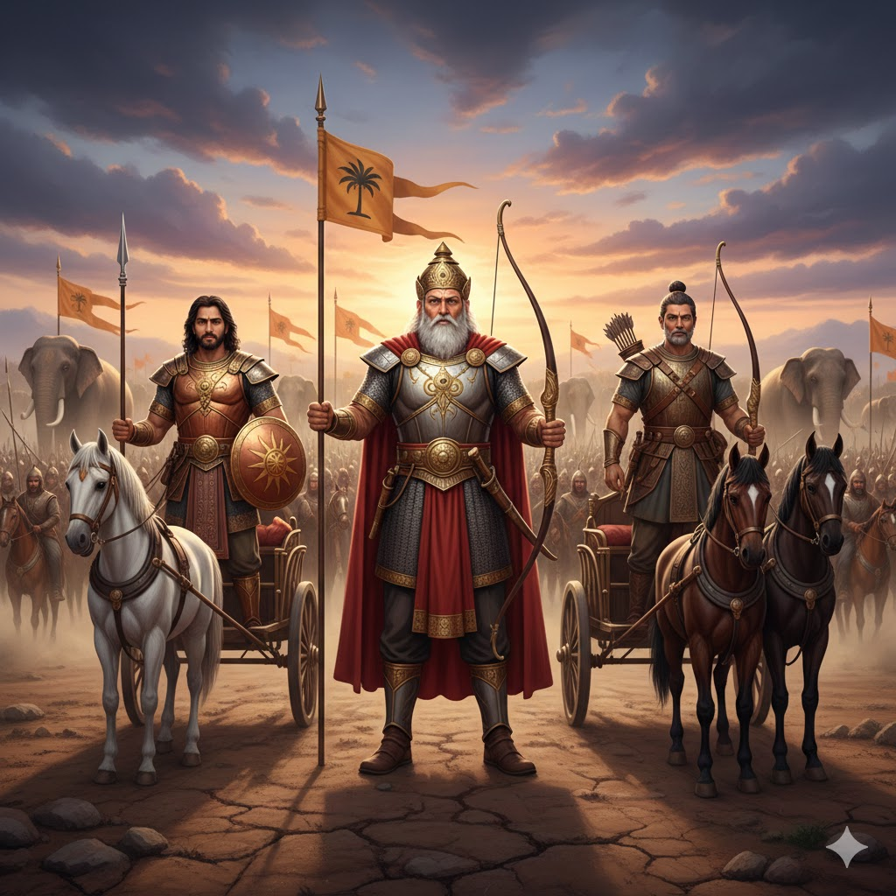

সরল ভাবার্থ
আপনি (দ্রোণাচার্য), পিতামহ ভীষ্ম, কর্ণ, পরম বিজয়ী কৃপাচার্য, অশ্বত্থামা, বিকর্ণ এবং সোমদত্তের পুত্র ভূরিশ্রবা—এঁরা সকলেই আমাদের প্রধান যোদ্ধা।
বিস্তারিত ধর্মীয় ব্যাখ্যা
দুর্যোধন এখন তাঁর নিজের পক্ষের মহা-মহারথীদের নাম নিয়ে নিজের ভয় কাটানোর চেষ্টা করছেন। প্রথমেই তিনি দ্রোণাচার্যের কথা বললেন, যিনি তাঁর অস্ত্রগুরু। এরপর তিনি পিতামহ ভীষ্মের নাম নিলেন, যিনি ইচ্ছামৃত্যুর বরপ্রাপ্ত। কর্ণের নাম এখানে অত্যন্ত তাৎপর্যপূর্ণ। কর্ণ ছিলেন দুর্যোধনের পরম মিত্র এবং অজেয় বীর। যদিও কর্ণ পাণ্ডবদের অগ্রজ ছিলেন, কিন্তু ভাগ্যের পরিহাসে তিনি অধর্মের পক্ষে দাঁড়িয়েছিলেন। কৃপাচার্য ছিলেন অপরাজেয় এবং কুলগুরু। দুর্যোধন তাঁর ভাই বিকর্ণের নামও নিয়েছেন। বিকর্ণ ছিলেন কৌরবদের মধ্যে একমাত্র ধার্মিক ব্যক্তি যিনি দ্রৌপদীর বস্ত্রহরণের প্রতিবাদ করেছিলেন।
এই শ্লোকটি মানুষের রাজসিক অহংকারের একটি চিত্র। দুর্যোধন মনে করছেন যে এই সব অজেয় বীরদের সাহচর্যে তাঁর জয় নিশ্চিত। ধর্মীয় বিচারে এটি একটি বড় শিক্ষা—বীরত্ব এবং ন্যায় এক জিনিস নয়। ভীষ্ম বা দ্রোণাচার্যের মতো পরম ধার্মিক ব্যক্তিরা কৌরবদের পক্ষে লড়ছিলেন কারণ তাঁরা রাজসিংহাসনের কাছে প্রতিজ্ঞাবদ্ধ ছিলেন। এটি হলো ধর্মের একটি সূক্ষ্ম সংকট। অন্যদিকে কর্ণ ছিলেন তাঁর দাতা ও বীর গুণের জন্য খ্যাত, কিন্তু কুসঙ্গের কারণে তিনি নরকের পথে চালিত হচ্ছিলেন। দুর্যোধন এই বীরদের নাম জপ করছেন ঠিকই, কিন্তু তিনি ভুলে গেছেন যে কোনো ব্যক্তিগত বীরত্বই ভগবানের ইচ্ছার ঊর্ধ্বে নয়। যখন কোনো মানুষ মনে করে যে কেবল বাহুবল দিয়ে সে বিশ্ব জয় করবে, তখনই তার পতনের সূচনা হয়। দুর্যোধনের এই দম্ভ আসলে তাঁর নিজের বিনাশের পথকেই প্রশস্ত করছে।

[ছবি: কৌরব শিবিরের সামনের সারিতে পিতামহ ভীষ্ম, দ্রোণাচার্য এবং কর্ণ বর্ম পরে যুদ্ধের জন্য প্রস্তুত হয়ে রথে দাঁড়িয়ে আছেন।]